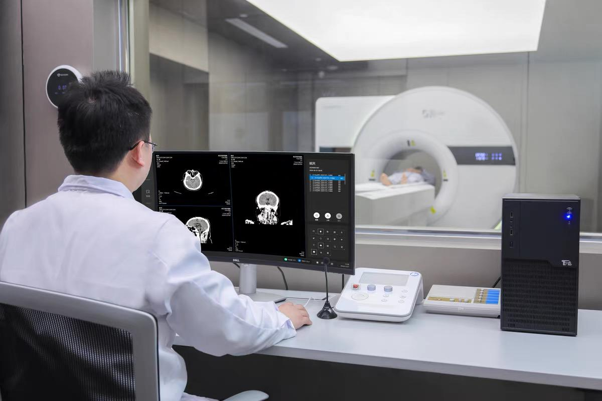

Plug-n-Image
Plug-n-Image技术体系的构建定位于支持智能探测与成像系统的灵活搭建、全过程数据的智能分析和临床（前）研究的快速开展。提供从数据获取、图像重建到数据分析全流程计算的标准化、模块化核心算子和接入机制；提供AI辅助的成像计算、数据分析计算工作流定义与智能调度能力。形成以PnI智能成像引擎为底座支撑探测与成像计算、医学影像分析和临床研究的技术体系，为驱动未来重大科学发现与前沿技术突破提供核心支撑。
Plug-n-Image研究团队目前正与其他机构合作伙伴一同寻求外部资金支持。如有意向，请发送邮件至 petlab@hust.edu.cn 与我们联系。
前沿进展
Plug-n-Image智能成像引擎
首创PnI软件架构，从顶层设计上彻底解耦粒子探测与成像全流程，将硬件控制、数据处理、图像重建与校正等底层复杂技术，封装为一系列定义清晰、接口标准的功能模块。在此基础上，构建可供研究者自由组合的创新平台，并深度融合多种异构计算资源，直面皮秒级信号实时处理等极端算力挑战。开启粒子探测与成像领域的图形操作系统时代。
RayPlus智能医学影像云平台
以开放、智能、可拓展为核心理念，构建面向未来的影像计算与数据交互平台。系统自底层采用云原生架构，融合云计算、人工智能与生物信息学技术，将影像处理、重建、分析与可视化贯通为一体的智能体系。
平台采用 B/S架构的轻量化访问模式，突破传统软硬件限制，实现算力与算法的云端统一调度；提供标准化云端接口与 SDK，支持算法快速部署与协作。为科研、临床及基层医疗提供高效的数字化环境。
RWE临床研究平台
真实世界证据（Real World Evidence，简称RWE）临床研究平台从源头标准化采集、结构化处理到智能分析，全流程支持真实世界证据的高效生成。通过算法、算力与数据的闭环联动，构建起一个可追溯、可验证、可演化的临床研究新体系。
平台汇聚多模态影像与临床数据资源，持续演进先进的图像分析与影像组学算法，以精准模型驱动肿瘤疗效评估、神经系统疾病早期识别等关键临床应用。
最新新闻

实验室纪事
万琳